A curated list of delightful Visual Studio Code
packages and resources. For more awesomeness, check
out awesome.


Table of Contents
- Table of Contents
- Official
- Syntax
- Migrating from other editors
- Using VS Code with particular technologies
- Lint and IntelliSense
- GitHub
- Productivity
- ARM Template Viewer
- Azure Cosmos DB
- Azure IoT Toolkit
- Bookmarks
- Browser Preview (deprecated)
- Color Tabs
- Create tests
- Dendron
- Deploy
- Duplicate Action
- Error Lens
- Toggle
- ES7 React/Redux/GraphQL/React-Native snippets
- Git History
- Git Project Manager
- GitLink
- GitLens
- Git Indicators
- GitLab Workflow
- Icon Fonts
- Import Cost
- Jira and Bitbucket
- JS Parameter Annotations
- Jumpy
- Kanban
- Live Server
- Multiple clipboards
- ngrok for VSCode
- Dotnet Core Test Explorer
- i18n Ally
- Instant Markdown
- npm Intellisense
- Parameter Hints
- Partial Diff
- Path Autocomplete
- Path IntelliSense
- Power Tools
- PrintCode
- Project Manager
- Project Dashboard
- Rainbow CSV
- Remote Development
- Remote VSCode
- REST Client
- Text Power Tools
- Todo Tree
- Toggle Quotes
- Typescript Destructure
- WakaTime
- Yo
- Timing
- Formatting & Beautification
- Uncategorized
- CodeRoad
- Code Runner
- Code Time
- Color Highlight
- Output Colorizer
- Dash
- Edit with Shell Command
- Editor Config for VS Code
- ftp-sync
- Highlight JSX/HTML tags
- Indent Rainbow
- iTerm2 Theme Sync
- Password Generator
- PlatformIO
- Polacode
- carbon-now-sh
- Quokka
- Runner
- Slack
- Spotify
- SVG
- SVG Viewer
- Text Marker (Highlighter)
- ESDOC MDN
- Interface generator
- JFrog
- Themes
- UI
- Syntax
- 2077 theme by Endormi
- An Old Hope Theme by Dustin Sanders
- Ariake Dark by wart
- Atom One Dark Theme by Mahmoud Ali
- Atomize by emroussel
- Ayu by teabyii
- Borealis Theme by Alexander Eckert
- Captain Sweetheart by ultradracula
- City Lights by Yummygum
- Cobalt2 Theme Official by Wes Bos
- Dracula Official by Dracula Theme
- Edge by Bogdan Lazar
- Eva Theme by fisheva
- Fairy Floss by nopjmp and sailorhg
- GitHub Theme by Thomas Pink
- Jellybeans Theme by Dimitar Nonov
- Material Palenight Theme by whizkydee
- Material Theme by Mattia Astorino
- Mno by u29dc
- Monokai Oblique by pushqrdx
- Monokai Pro by monokai (commercial)
- Night Owl by Sarah Drasner
- Plastic by Will Stone
- Nord by arcticicestudio
- Rainglow by Dayle Rees
- Relaxed Theme by Michael Kühnel
- Shades of Purple by Ahmad Awais
- Slime Theme by smlombardi
- Niketa Theme by Dejan Toteff
- People to Follow
- Resources for extension developers
- Online Courses
- Contribute
- License
Official
- Official website
- Source code on GitHub
- Releases (stable channel)
- Releases (insiders channel)
- Monthly iteration plans
Syntax
Language packages extend the editor with syntax highlighting and/or snippets for a specific language or file format.
- Arduino
- Befunge
- Blink
- Bolt
- Bond
- CMake
- Dart
- Dockerfile
- EJS
- Elixir
- Elm
- Erlang
- F#
- Flatbuffers
- Fortran
- Hack(HHVM)
- Handlebars
- Hive SQL
- Julia
- KL
- Kotlin
- LaTeX
- Mason
- openHAB
- Parser 3
- Pascal, or OmniPascal (only for Windows)
- Perl HTML-Template
- POV-Ray
- Protobuf
- Ruby
- Scala
- Shaders (HLSL, GLSL, Cg)
- Stylus
- Swift
- VEX
- Wenyan
- Zephir
Migrating from other editors
The VSCode team provides keymaps from popular editors, making the transition to VSCode almost seamless and easy.
Migrating from Vim
Vim Mode - Relatively new, but promising extension implementing Vim features in VSCode
Migrating from Atom
Popular Atom key bindings for Visual Studio Code
Migrating from Sublime Text
Popular Sublime Text key bindings for VS Code.
Migrating from Visual Studio
Popular Visual Studio key bindings for VS Code.
Migrating from Intellij IDEA
Popular Intellij IDEA key bindings for VS Code.
Camel Humps
Like with Visual Studio and Resharper or Intellij IDEA
Using VS Code with particular technologies
Microsoft created a collection of recipes for using VS Code with particular technologies (mostly Web).
Make sure to visit it at Microsoft/vscode-recipes
Lint and IntelliSense
In case the awesome nirvana that is linting has not yet been unleashed upon you:
lint was the name originally given to a particular program that flagged some suspicious and non-portable constructs (likely to be bugs) in C language source code. The term is now applied generically to tools that flag suspicious usage in software written in any computer language.
Unlike some other editors, VS Code supports IntelliSense, linting, outline out-of-the-box and doesn't require any separate extension to run linter packages. Some linters are already integrated in VS Code, you can find the full list in the official documentation, Languages section.
1C
- 1C/OScript - rich 1С:Enterprise 8 (BSL) language support in VSC - add syntax highlighting to *.bsl и *.os files in VSC, add IntelliSense and syntax helper for 1С lang
AutoHotkey
AutoHotkey Plus
Syntax Highlighting, Snippets, Go to Definition, Signature helper and Code formatter
Bash
Bash IDE
A language server for Bash
Bash Debug
A debugger extension for Bash scripts based on
bashdb

Shellman
Bash script snippets extension

C++
- C/C++ - Preview C/C++ extension by Microsoft, read official blog post for the details
- Clangd - Provides C/C++ language IDE features for VS Code using clangd: code completion, compile errors and warnings, go-to-definition and cross references, include management, code formatting, simple refactorings.
- gnu-global-tags - Provide Intellisense for C/C++ with the help of the GNU Global tool.
- YouCompleteMe - Provides semantic completions for C/C++ (and TypeScript, JavaScript, Objective-C, Golang, Rust) using YouCompleteMe.
- C/C++ Clang Command Adapter - Completion and Diagnostic for C/C++/Objective-C using Clang command.
- CQuery - C/C++ language server supporting multi-million line code base, powered by libclang. Cross references, completion, diagnostics, semantic highlighting and more.
More
C#, ASP .NET and .NET Core
- C# - C# extension by Microsoft, read official documentation for the details
- C# FixFormat - Fix format of usings / indents / braces / empty lines
- C# Extensions - Provides extensions to the IDE that will speed up your development workflow.
- MSBuild Project Tools
- VSCode Solution Explorer
- .NET Core Test Explorer

Clojure
Calva
Integrated REPL, linting, inline eval, test runner, and more. Powered by Cider & nRepl.

CSS
CSS Peek
Peek or Jump to a CSS definition directly from HTML, just like in Brackets!

-
stylelint - Lint CSS/SCSS.
-
Autoprefixer Parse CSS,SCSS, LESS and add vendor prefixes automatically.

-
Intellisense for CSS class names - Provides CSS class name completion for the HTML class attribute based on the CSS files in your workspace. Also supports React's className attribute.

Go
- Go - Rich language support for the Go language.
Groovy
- VsCode Groovy Lint - Groovy lint, format, prettify and auto-fix

Haskell
- haskell-linter
- Haskell IDE engine - provides language server for stack and cabal projects.
HLSL
- HLSL Tools - provides rich language support for editing HLSL files in VS Code

Shell
Java
JavaScript

- Babel JavaScript
- Visual Studio IntelliCode - This extension provides AI-assisted development features including autocomplete and other insights based on understanding your code context.

See the difference between these two here
Linters
-
tslint (deprecated) - TSLint for Visual Studio Code (with
"tslint.jsEnable": true). -
Prettier - Linter, Formatter and Pretty printer for Prettier.
-
Code Spell Checker - Spelling Checker for Visual Studio Code (English). Also supports other languages via external extensions.
-
Schema.org Snippets - Snippets for Schema.org.
Framework-specific
- Vetur - Toolkit for Vue.js 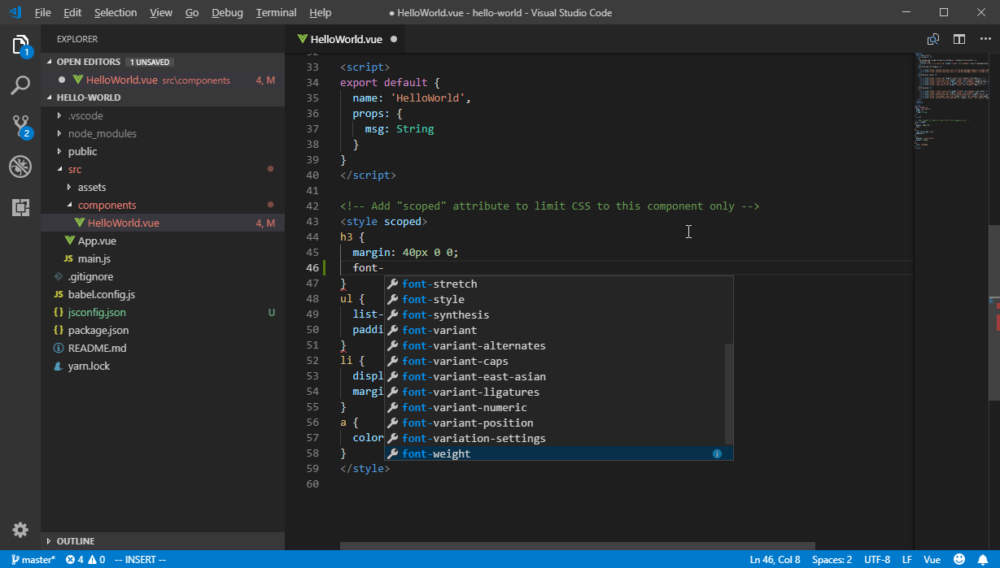
Debugger for Chrome
A VS Code extension to debug your JavaScript code in the Chrome browser, or other targets that support the Chrome Debugging Protocol.
Facebook Flow
- Flow Language Support - provides all the functionality you would expect — linting, intellisense, type tooltips and click-to-definition
- vscode-flow-ide - an alternative Flowtype extension for Visual Studio Code
TypeScript
- tslint (deprecated) - TSLint for Visual Studio Code.
Debugger for Chrome
A VS Code extension to debug your JavaScript code in the Chrome browser, or other targets that support the Chrome Debugging Protocol.
Markdown
markdownlint
Linter for markdownlint.
Markdown All in One
All-in-one markdown plugin (keyboard shortcuts, table of contents, auto preview, list editing and more)

Markdown Emoji
Adds emoji syntax support to VS Code's built-in Markdown preview

PHP
IntelliSense
These extensions provide slightly different sets of features. While the first one offers better autocompletion support, the second one seems to have more features overall.
Laravel
- Laravel 5 Snippets - Laravel 5 snippets for Visual Studio Code
- Laravel Blade Snippets - Laravel blade snippets and syntax highlight support

- Laravel Model Snippets - Quickly get models up and running with Laravel Model Snippets.

- Laravel Artisan - Laravel Artisan commands within Visual Studio Code

- DotENV - Support for dotenv file syntax

Twig
To enable Emmet support in .twig files, you'll need to have the following in your settings:
{
"emmet.includeLanguages": {
"twig": "html"
}
}
Smarty
Smarty Template Support
Smarty template support with formatting, folding, snippets, syntax highlighting and more.

Other extensions
- Format HTML in PHP - Formatting for the HTML in PHP files. Runs before the save action so you can still have a PHP formatter.

- Composer
- PHP Debug - XDebug extension for Visual Studio Code
- PHP DocBlocker
- php cs fixer - PHP CS Fixer extension for VS Code, php formatter, php code beautify tool
- phpcs - PHP CodeSniffer for Visual Studio Code
- phpfmt - phpfmt for Visual Studio Code
Read more
POV-Ray
- POV-Ray - Persistence of Vision Ray Tracer (POV-Ray) Extension, includes Syntax Highlighting and Snippets for common POV-Ray scene elements, Render the current scene from within Visual Studio Code

Python
- Python - Linting, Debugging (multi threaded, web apps), Intellisense, auto-completion, code formatting, snippets, unit testing, and more.
TensorFlow
- TensorFlow Snippets - This extension includes a set of useful code snippets for developing TensorFlow models in Visual Studio Code.

ReasonML
- ReasonML - Intellisense, code formatting, refactoring, code lens and more
Rust
- Rust - Linting, auto-completion, code formatting, snippets and more
Terraform
- Terraform - Syntax highlighting, linting, formatting, and validation for Hashicorp's Terraform
GitHub
GitHub
Provides GitHub workflow support. For example browse project, issues, file (the current line), create and manage pull request. Support for other providers (e.g. gitlab or bitbucket) is planned.
GitHub Pull Requests and Issues
Review and manage GitHub pull requests and issues
GistPad
Allows you to manage GitHub Gists entirely within the editor. You can open, create, delete, fork, star and clone gists, and then seamlessly begin editing files as if they were local. It's like your very own developer library for building and referencing code snippets, commonly used config/scripts, programming-related notes/documentation, and interactive samples.

GitHub Actions
Shows GitHub Actions workflows and runs
GitHub Repositories
Remotely browse and edit any GitHub repository
GitHub Pull Request Monitor
This extension uses the GitHub api to monitor the state of your pull requests and let you know when it's time to merge or if someone requested changes.

Productivity
ARM Template Viewer
Displays a graphical preview of Azure Resource Manager (ARM) templates. The view will show all resources with the official Azure icons and also linkage between the resources.

Azure Cosmos DB
Browse your database inside the vs code editor

Azure IoT Toolkit
Everything you need for the Azure IoT development: Interact with Azure IoT Hub, manage devices connected to Azure IoT Hub, and develop with code snippets for Azure IoT Hub

Bookmarks
Mark lines and jump to them
Browser Preview (deprecated)
Browser Preview for VS Code enables you to open a real browser preview inside your editor that you can debug. Browser Preview is powered by Chrome Headless, and works by starting a headless Chrome instance in a new process. This enables a secure way to render web content inside VS Code, and enables interesting features such as in-editor debugging and more!

Color Tabs
An extension for big projects or monorepos that colors your tab/titlebar based on the current package

Create tests
An extension to quickly generate test files.

Dendron
An extension that can turn Visual Studio Code into a PKM tool, with excellent UX, using Markdown files to organize and reference any amount of knowledge. Whether you organize your notes with PARA or Zettelkasten, link notes together like Roam, or simply create notes in an ad-hoc manner, Dendron can help. Think of it as a second brain to help you make sense of all the information you care about. Bonus: Dendron can also publish a static site via NextJS if also using
dendron-cli.

Deploy
Commands for upload or copy files of a workspace to a destination.

Duplicate Action
Ability to duplicate files and directories.
Error Lens
Show language diagnostics inline (errors/warnings/...).

Toggle
Toggle any VS Code setting by your favorite keybindings.
Example of toggling typescript.inlayHints.functionLikeReturnTypes.enabled by shortcut:
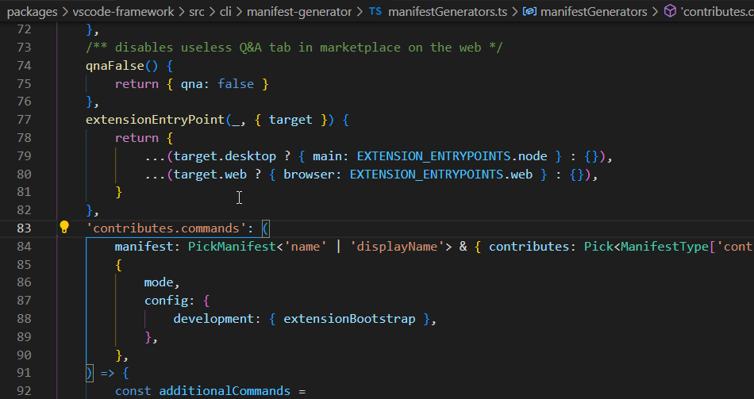
ES7 React/Redux/GraphQL/React-Native snippets
Provides Javascript and React/Redux snippets in ES7

Gi
Generating .gitignore files made easy.

Git History
View git log, file or line History
Git Project Manager
Automatically indexes your git projects and lets you easily toggle between them
GitLink
GoTo current file's online link in browser and Copy the link in clipboard.

GitLens
Provides Git CodeLens information (most recent commit, # of authors), on-demand inline blame annotations, status bar blame information, file and blame history explorers, and commands to compare changes with the working tree or previous versions.

Git Indicators
Atom-like git indicators on active panel


GitLab Workflow
Adds a GitLab sidebar icon to view issues, merge requests and other GitLab resources. You can also view the results of your GitLab CI/CD pipeline and check the syntax of your
.gitlab-ci.yml.
Gradle Tasks
Run gradle tasks in VS Code.

Icon Fonts
Snippets for popular icon fonts such as Font Awesome, Ionicons, Glyphicons, Octicons, Material Design Icons and many more!
Import Cost
This extension will display inline in the editor the size of the imported package. The extension utilizes webpack with babili-webpack-plugin in order to detect the imported size.
Jira and Bitbucket
Bringing the power of Jira and Bitbucket to VS Code - With Atlassian for VS Code you can create and view issues, start work on issues, create pull requests, do code reviews, start builds, get build statuses and more!

JS Parameter Annotations
Provides annotations on function calls in JS/TS files to provide parameter names to arguments.

Jumpy
Provides fast cursor movement, inspired by Atom's package of the same name.

Kanban

Simple Kanban board for use in Visual Studio Code, with time tracking and Markdown support.
Live Server
Launch a development local Server with live reload feature for static & dynamic pages.

Multiple clipboards
Override the regular Copy and Cut commands to keep selections in a clipboard ring
ngrok for VSCode
ngrok allows you to expose a web server running on your local machine to the internet. Just tell ngrok what port your web server is listening on. This extension allows you to control ngrok from the VSCode command palette

Dotnet Core Test Explorer
View and run your .NET Core tests directly in the editor.

i18n Ally
🌍 All in one i18n extension for VSCode

Instant Markdown
Simply, edit markdown documents in vscode and instantly preview it in your browser as you type.

npm Intellisense
Visual Studio Code plugin that autocompletes npm modules in import statements.

Parameter Hints
Provides parameter hints on function calls in JS/TS/PHP files.

Partial Diff
Compare (diff) text selections within a file, across different files, or to the clipboard

Paste JSON as Code
Infer the structure of JSON and paste is as types in many programming languages

Path Autocomplete
Provides path completion for visual studio code.

Path IntelliSense
Visual Studio Code plugin that autocompletes filenames

Power Tools
Extends Visual Studio Code via things like Node.js based scripts or shell commands, without writing separate extensions

PrintCode
PrintCode converts the code being edited into an HTML file, displays it by browser and prints it.

Project Manager
Easily switch between projects.

Project Dashboard
VSCode Project Dashboard is a Visual Studio Code extension that lets you organize your projects in a speed-dial like manner. Pin your frequently visited folders, files, and SSH remotes onto a dashboard to access them quickly.

Rainbow CSV
Highlight columns in comma, tab, semicolon and pipe separated files, consistency check and linting with CSVLint, multi-cursor column editing, column trimming and realignment, and SQL-style querying with RBQL.

Remote Development
Allows users to open any folder in a container, on a remote machine, container or in Windows Subsystem for Linux(WSL) and take advantage of VS Code's full feature set.

Remote VSCode
Allow user to edit files from Remote server in Visual Studio Code directly.
REST Client
Allows you to send HTTP request and view the response in Visual Studio Code directly.

Text Power Tools
All-in-one extension for text manipulation: filtering (grep), remove lines, insert number sequences and GUIDs, format content as table, change case, converting numbers and more. Great for finding information in logs and manipulating text.

Todo Tree
Custom keywords, highlighting, and colors for TODO comments. As well as a sidebar to view all your current tags.

Toggle Quotes
Cycle between single, double and backtick quotes

Typescript Destructure
TypeScript Language Service Plugin providing a set of source actions for easy objects destructuring

WakaTime
Automatic time tracker and productivity dashboard showing how long you coded in each project, file, branch, and language.
Yo
Scaffold projects using Yeoman

Timing
Time converter extension to convert timestamps from/to various formats and insert them on demand or just display them. It further provides a neat hover provider to beautify epoch timestamps instantly. All features are highly customizable.

Formatting & Beautification
Better Align
Align your code by colon(:), assignment(=,+=,-=,*=,/=) and arrow(=>). It has additional support for comma-first coding style and trailing comment.
And it doesn't require you to select what to be aligned, the extension will figure it out by itself.

Auto Rename Tag
Native settings, just add
"editor.linkedEditing": trueto yoursettings.jsonfile
Auto rename paired HTML/XML tags

beautify
Beautify code in place for VS Code
html2pug
Transform html to pug inside your Visual Studio Code, forget about using an external page anymore.
ECMAScript Quotes Transformer
Transform quotes of ECMAScript string literals

Paste and Indent
Paste code with "correct" indentation

Sort Lines
Sorts lines of text in specific order

Surround
A simple yet powerful extension to add wrapper templates around your code blocks.

Wrap Selection
Wraps selection or multiple selections with symbol or multiple symbols

Formatting Toggle
Allows you to toggle your formatter on and off with a simple click
Auto Import
Automatically finds, parses and provides code actions and code completion for all available imports. Works with Typescript and TSX.
shell-format
shell script & Dockerfile & dotenv format

Vscode Google Translate
Quickly translate selected text right in your code

Explorer Icons
City Lights Icons

VSCode Icons

Seti Icons

Material Icon Theme

Uncategorized
CodeRoad
Play interactive tutorials in your favorite editor.

Code Runner
Run code snippet or code file for multiple languages: C, C++, Java, JavaScript, PHP, Python, Perl, Ruby, Go, Lua, Groovy, PowerShell, BAT/CMD, BASH/SH, F# Script, C# Script, VBScript, TypeScript, CoffeeScript, Scala, Swift, Julia, Crystal, OCaml Script

Code Time
Automatic time reports by project and other programming metrics right in VS Code.
Color Highlight
Highlight web colors in your editor

Output Colorizer
Syntax highlighting for the VS Code Output Panel and log files

Dash
Dash integration in Visual Studio Code

Edit with Shell Command
Leverage your favourite shell commands to edit text

Editor Config for VS Code
Editor Config for VS Code
ftp-sync
Auto-sync your work to remote FTP server

Highlight JSX/HTML tags
Highlights matching tags in the file.
Indent Rainbow
A simple extension to make indentation more readable.

iTerm2 Theme Sync
Syncs selected VSCode theme with iTerm2 color profile

Password Generator
Create a secure password using our generator tool. Help prevent a security threat by getting a strong password today.

PlatformIO
An open source ecosystem for IoT development: supports 350+ embedded boards, 20+ development platforms, 10+ frameworks. Arduino and ARM mbed compatible.

Polacode
Polaroid for your code 📸.

carbon-now-sh
Send your code to carbon.now.sh.

Quokka
Rapid prototyping playground for JavaScript and TypeScript in VS Code, with access to your project's files, inline reporting, code coverage and rich output formatting.

Runner
Run various scripts right from VS Code

Slack
Send messages and code snippets, upload files to Slack

Spotify
Provides integration with Spotify Desktop client. Shows the currently playing song in status bar, search lyrics and provides commands for controlling Spotify with buttons and hotkeys.

SVG
{kind=link}
A Powerful SVG Language Support Extension(beta). Almost all the features you need to handle SVG.

SVG Viewer
View an SVG in the editor and export it as data URI scheme or PNG.

Text Marker (Highlighter)
Highlight multiple text patterns with different colors at the same time. Highlighting a single text pattern can be done with the editor's search functionality, but it cannot highlight multiple patterns at the same time, and this is where this extension comes handy.

ESDOC MDN
Quickly bring up helpful MDN documentation in the editor

Interface generator
Quickly generate interface definitions from typescript class

JFrog
Adds JFrog Xray scanning of project dependencies to your VS Code IDE. It allows developers to view panels displaying vulnerability information about the components and their dependencies directly in their VS Code IDE. The extension also allows developers to track the status of the code while it is being built, tested and scanned on the CI server.

Themes
UI
If you're feeling brave, there are at least two custom UIs for VS Code:
Syntax
2077 theme by Endormi
Cyberpunk 2077 inspired theme

An Old Hope Theme by Dustin Sanders
VSCode theme inspired by a galaxy far far away...

Ariake Dark by wart
Dark VSCode theme inspired by Japanese traditional colors and the poetry composed 1000 years ago.
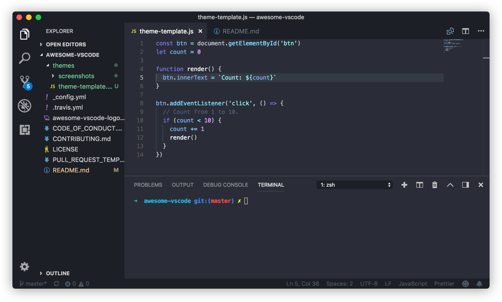Atom One Dark Theme by Mahmoud Ali
One Dark Theme based on Atom.

Atomize by emroussel
A detailed and accurate Atom One Dark Theme.
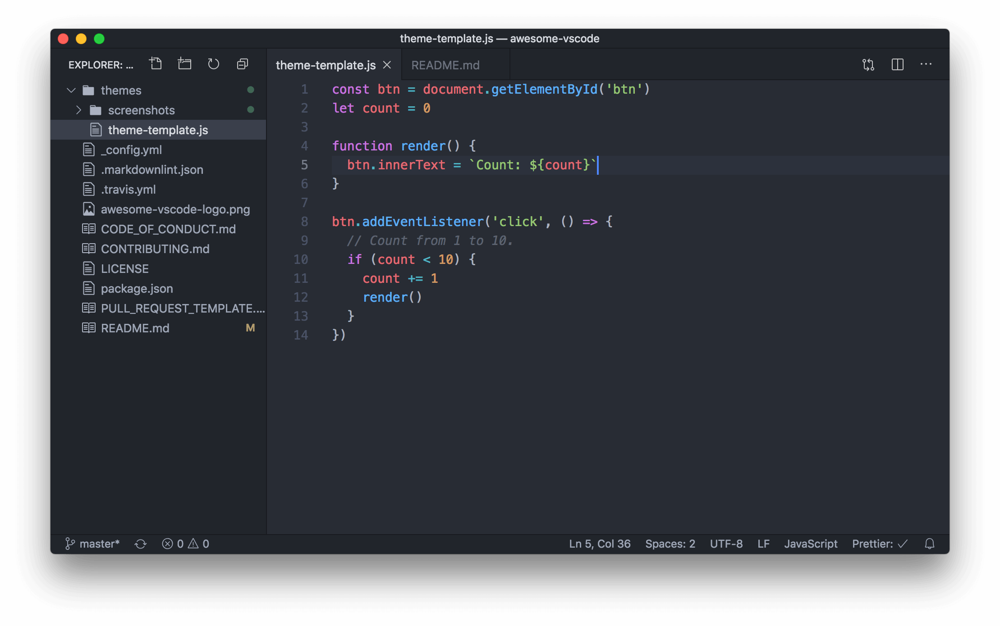Ayu by teabyii
A simple theme with bright colors and comes in three versions — dark, light and mirage for all day long comfortable work.

Borealis Theme by Alexander Eckert
VS Code theme inspired by the calm colors of the aurora borealis in Alaska.
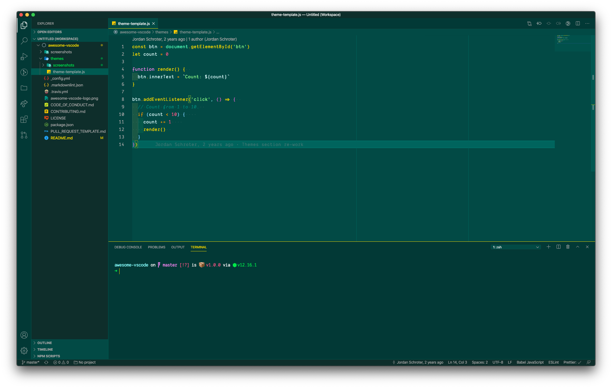Captain Sweetheart by ultradracula
Tuff but sweet theme.
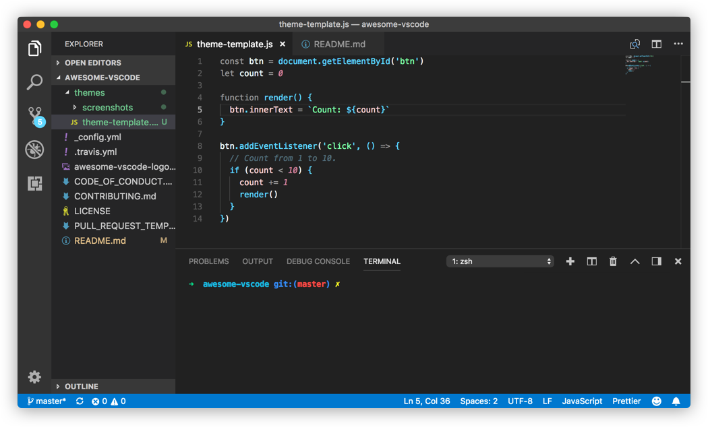City Lights by Yummygum
🏙 Yummygum's Official City Lights suite
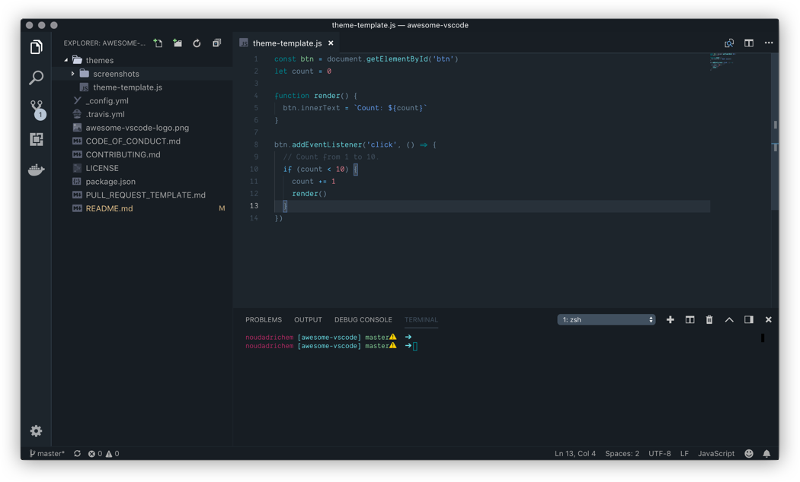Cobalt2 Theme Official by Wes Bos
🔥 Official theme by Wes Bos.

Dracula Official by Dracula Theme
Official Dracula Theme. A dark theme for many editors, shells, and more.
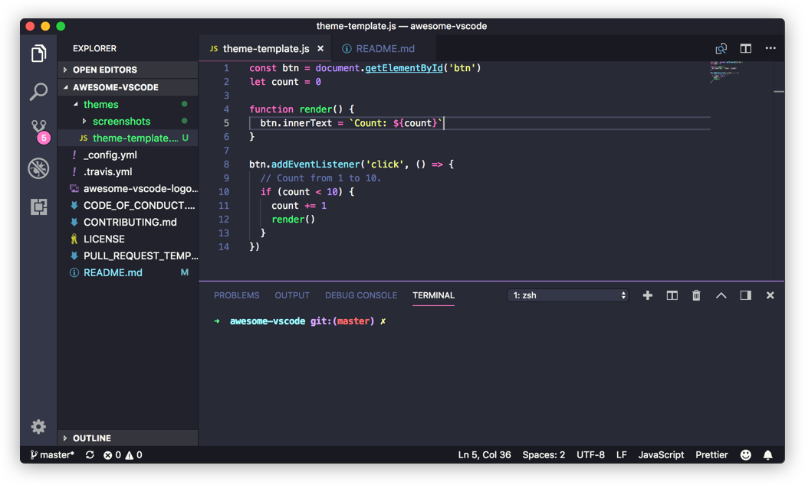Edge by Bogdan Lazar
A simple theme with bright colors in three variants — Night Sky, Serene and Ocean for all day long comfortable work.
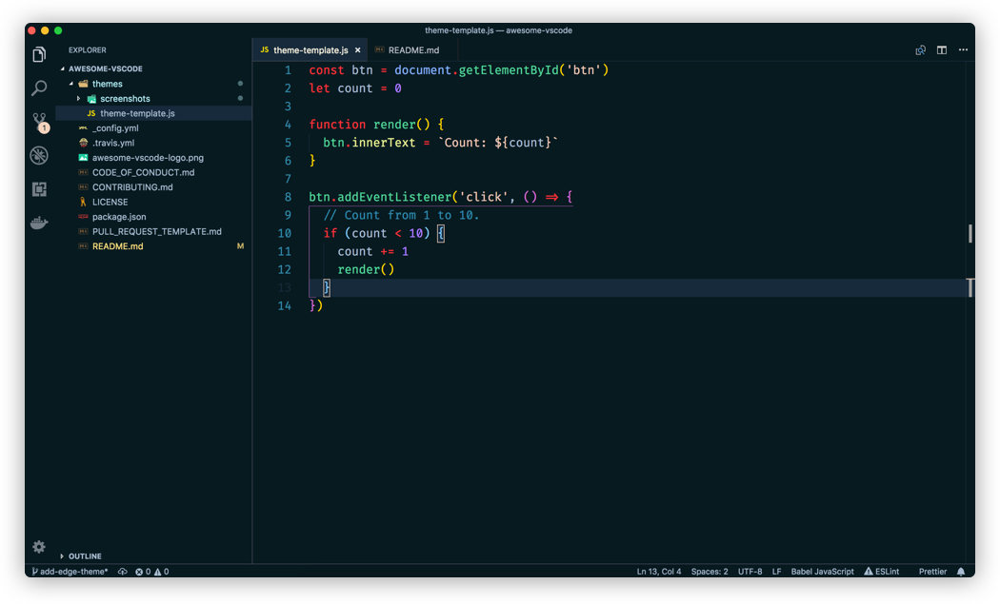Eva Theme by fisheva
A colorful and semantic coloring code theme.

Fairy Floss by nopjmp and sailorhg
A fun, purple-based pastel/candy/daydream fairyfloss theme made by sailorhg.

GitHub Theme by Thomas Pink
GitHub Theme for Visual Studio Code.
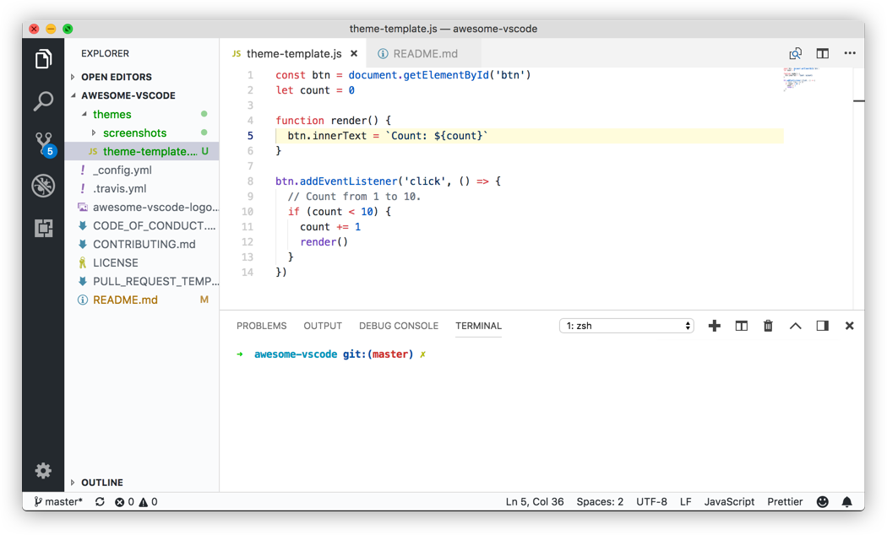Jellybeans Theme by Dimitar Nonov
Jellybeans Theme for Visual Studio Code.
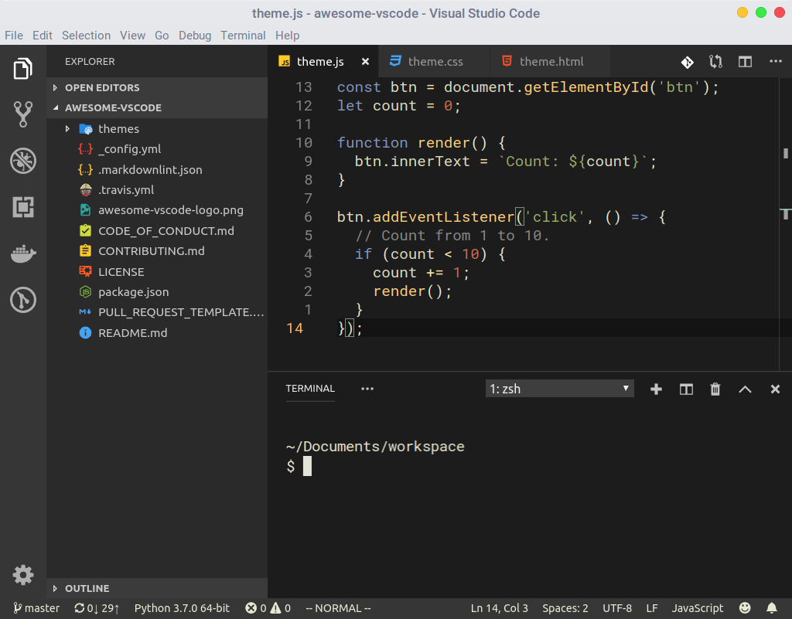Material Palenight Theme by whizkydee
An elegant and juicy material-like theme for Visual Studio Code.

Material Theme by Mattia Astorino
The most epic theme now for Visual Studio Code.
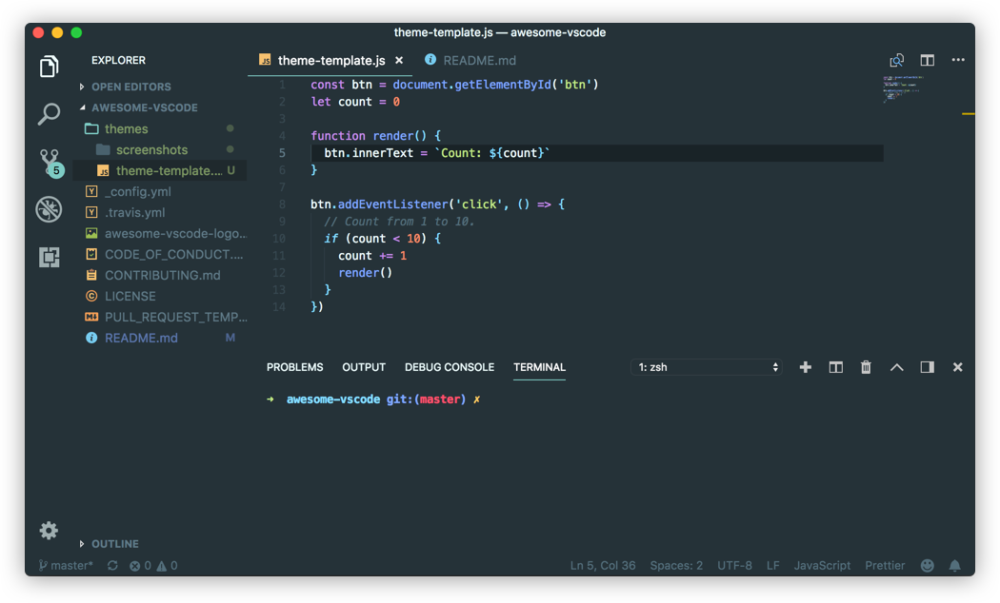Mno by u29dc
Minimal monochrome theme.

Monokai Oblique by pushqrdx
Monokai inspired theme for Visual Studio Code and Visual Studio IDE.
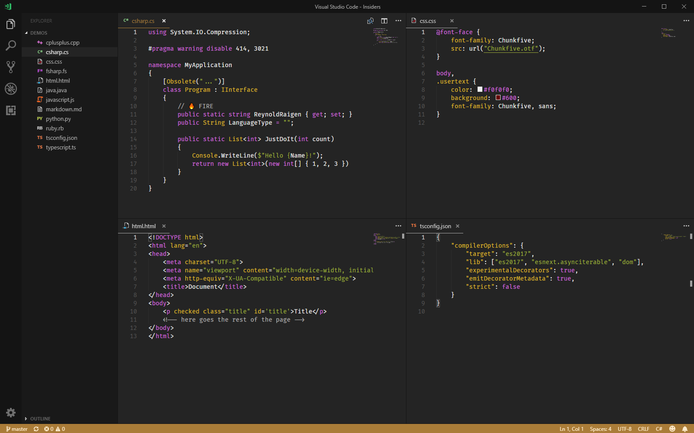Monokai Pro by monokai (commercial)
Beautiful functionality for professional developers, from the author of the original Monokai color scheme.

Night Owl by Sarah Drasner
A VS Code theme for the night owls out there. Works well in the daytime, too, but this theme is fine-tuned for those of us who like to code late into the night. Color choices have taken into consideration what is accessible to people with color blindness and in low-light circumstances. Decisions were also based on meaningful contrast for reading comprehension and for optimal razzle dazzle. ✨

Plastic by Will Stone
A simple theme.

Nord by arcticicestudio
An arctic, north-bluish clean and elegant Visual Studio Code theme.

Rainglow by Dayle Rees
Collection of 320+ beautiful syntax and UI themes.

Relaxed Theme by Michael Kühnel
A relaxed theme to take a more relaxed view of things.

Shades of Purple by Ahmad Awais
⚡ A professional theme with hand-picked & bold shades of purple 💜 to go along with your VS Code. A custom VS Code theme with style.

Slime Theme by smlombardi
A dark syntax/workbench theme for Visual Studio Code - optimized for SCSS, HTML, JS, TS, Markdown, and PHP files.
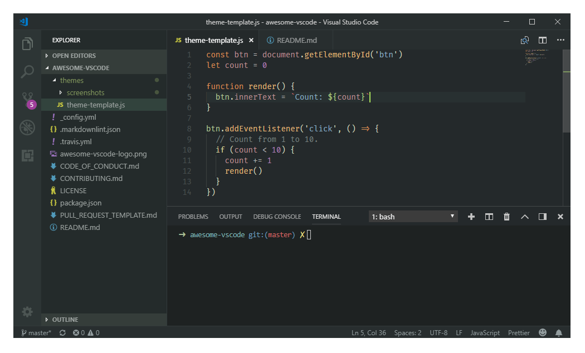Niketa Theme by Dejan Toteff
Collection of 18 light themes separated in 4 groups by background's brightness.
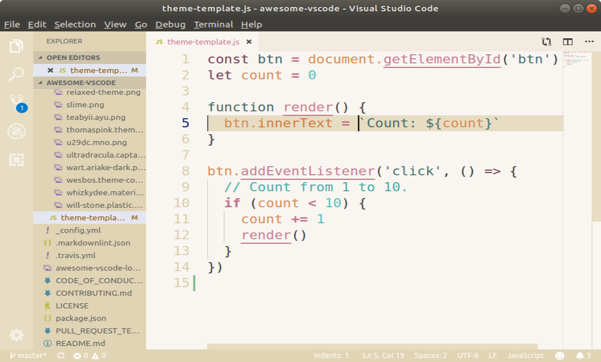People to Follow
A list of Twitter accounts for various people in the VS Code Community
- @code - The official VS Code Twitter
- @auchenberg - VS Code Program Manager
- @BenjaminPasero - VS Code Dev
- @chrisdias - VS Code Program Manager
- @_clarkio - Developer Advocate @ Azure. Creator of VS Code release highlight videos
- @eamodio - GitLens creator
- @ErichGamma - VS Code Dev
- @IsidorN - VS Code Dev
- @joaomoreno - VS Code Dev
- @johannesrieken - VS Code Dev
- @lannonbr - Creator of vscode.rocks & JS Parameter Annotations extension
- @maeschli - VS Code Dev
- @mattbierner - VS Code Dev
- @MrAhmadAwais - JS/WordPress Core Dev. Creator of VSCode.pro course & Shades of Purple theme
- @ramyanexus - VS Code Dev. Maintainer of Go extension
- @Tyriar - VS Code Dev. Creator of xterm.js
Resources for extension developers
Documentation
- Better Comments - The Better Comments extension will help you create more human-friendly comments in your code.
- Visual Studio Code API section of Official Documentation
Libraries
- vscode-test-content - A method to set/get editor content, and it's selection. Especially useful for unit tests.
- typed-vscode - Generates types from contribution points of your extension manifest
Tools
- Live Share - Visual Studio Live Share enables you to collaboratively edit and debug with others in real time, regardless what programming languages you're using or app types you're building.
- Online TextMate Themes Editor - since VS Code supports TextMate themes, you can create them in this online editor and then create a new VS Code package using Yo Code tool
- Yo Code - Extension Generator
- Open in Code - macOS Finder toolbar app to open current folder in Visual Studio Code
- Themer - Easily create your own theme for VS Code (and matching ones for your other tools).
- Azure Tools for Visual Studio Code - This extension for Visual Studio Code gives Azure developers some convenient commands for creating or accessing resources directly in the editor.

- Mark down preview - Markdown Preview Enhanced is an extension that provides you with many useful functionalities such as automatic scroll sync, math typesetting, mermaid, PlantUML, pandoc, PDF export, code chunk, presentation writer, etc. A lot of its ideas are inspired by Markdown Preview Plus and RStudio Markdown.
Online Courses
Visual Studio Code Power User Course (commercial)
After 10 years with Sublime Text, Ahmad Awais switched to VSCode, built Shades of Purple theme, and spent over a 1,000 hours perfecting his setup. He has launched a VSCode Power User Course to help you switch today. You can bring all your custom settings from the previous editor and learn the power user workflows for HTML/CSS, Git/GitHub & Open Source, supercharged Markdown, and everything from JavaScript to PHP, Go, Python, C++, C#, ROR. In this course, you'll also learn to install/setup 50+ Extensions.
- VSCode.pro - 📺 Huge five hours 65 videos VSCode course.
- Ahmad Awais - 🙌 Creator of Shades of Purple theme. Core Developer for WP/JS. OSS Dev Advocate.
Contribute
Contributions welcome! Read the contribution guidelines first.
License
I am providing code and resources in this repository to you under an open source license. Because this is my personal repository, the license you receive to my code and resources is from me and not my employer (Microsoft).

To the extent possible under law, Valerii Iatsko has waived all copyright and related or neighboring rights to this work.